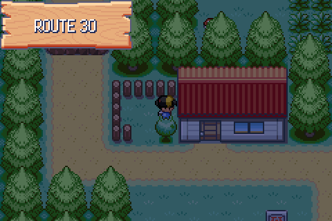
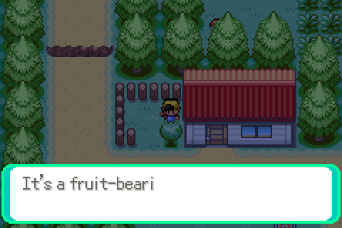
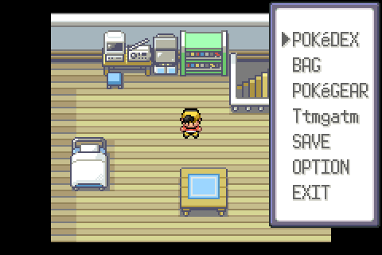
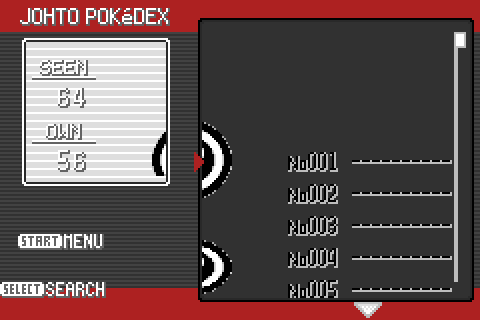

Nine observations from the sixth round of human testing, seven of them fixed here. Captures are raw mGBA frames taken by tools/playtest/playtest.py; the start menu and Pokédex ones come from tools/playtest/scripts/d114.txt. Full reasoning in docs/port/decisions.md, section D114.
Little visual bug on the names, there’s a little line? Idk why
UpdateNickInHealthbox cleared 55 pixel columns of the name field, but the level field’s own clear starts one column further right. The column between the two was cleared by nothing, so whatever the previous mon’s name left in that VRAM stayed on screen. 55 → 56 on both halves of the pair.
When they asked the name, I said Hush, and then the officer changed it to MAY
CrystalDust names its rival the way FRLG does: the officer in Elm’s lab runs the naming screen and SetRivalNickname writes the answer to gSaveBlock1Ptr->rivalName. ExpandPlaceholder_RivalName only consulted that buffer under IS_FRLG, so every {RIVAL} in the Johto script fell through to Emerald’s MAY/BRENDAN. The guard is gone; a stored name wins.
And wally does the catch tutorial
CrystalDust’s dude back pic was vendored with every other back pic (graphics/trainers/back_pics/dude_back_pic.png, byte-identical to upstream) but never wired into gTrainerPicInfo, so there was no pic id for the tutorial to ask for and it kept Emerald’s TRAINER_PIC_WALLY. Added TRAINER_PIC_DUDE with CrystalDust’s four-frame throw, and pointed both battle_controller_wally.c and CATCH_TUTORIAL_TRAINER_PIC at it.
Blonde nurse joy?!?
The art is CrystalDust’s pink-haired nurse; the merge kept expansion’s palette tag, which is Emerald’s NPC_1. CrystalDust drew her against NPC_2. This one observation is what prompted the sweep in D115.

So visually, apricot bushes look like they’re one square but their hit box appears to be 2, can’t walk down here (but also, can’t interact with it from here either, hitting A does nothing)
The apricorn is an object event drawn over the tree’s top tile (D111), and an object event collides and can be talked to. It is scenery: it is now exempt from GetObjectObjectCollidesWith and from GetInteractedObjectEventScript, which leaves the trunk below as the impassable, talkable half of the tree — which is what the map says it is.


I don’t have a pokegear option anyway on the menus
The merge kept expansion’s start menu whole, and MENU_ACTION_POKENAV with it — gated on FLAG_SYS_POKENAV_GET, which nothing in Johto sets. Meanwhile gText_MenuPokegear, FLAG_SYS_POKEGEAR_GET (set by the script in the player’s house) and CB2_InitPokegear were all present and unreferenced.

I failed to screenshot it but also got some gobbledegook name from a bug catcher for his phone
Emerald’s Std_RegisteredInMatchCall buffers a trainer class and name keyed off VAR_0x8000, which Johto’s registerphonecontact never sets — and in doing so it overwrote STR_VAR_1, where FindPhoneContactNameFromFlag had already put the contact’s name. CrystalDust’s version of the script is back.
dex not rendering properly
graphics/pokedex/menu.png is CrystalDust’s art, but the code drew it through Emerald’s tilemaps and palettes — Johto tiles addressed by a Hoenn map. gPokedexListJohto_Tilemap, gPokedexBgJohto_Pal, gPokedexCaughtScreenJohto_Pal and gPokedexSearchMenuJohto_Tilemap were all vendored and unreferenced.

Also, is silver meant to have a zigzagoon?
Not a data defect — every Cherrygrove rival party is correct. It took identifying the battle (first fight, Totodile started) to find it, so it is written up in D115 with the palette sweep this round also set off.